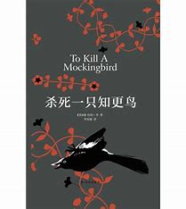
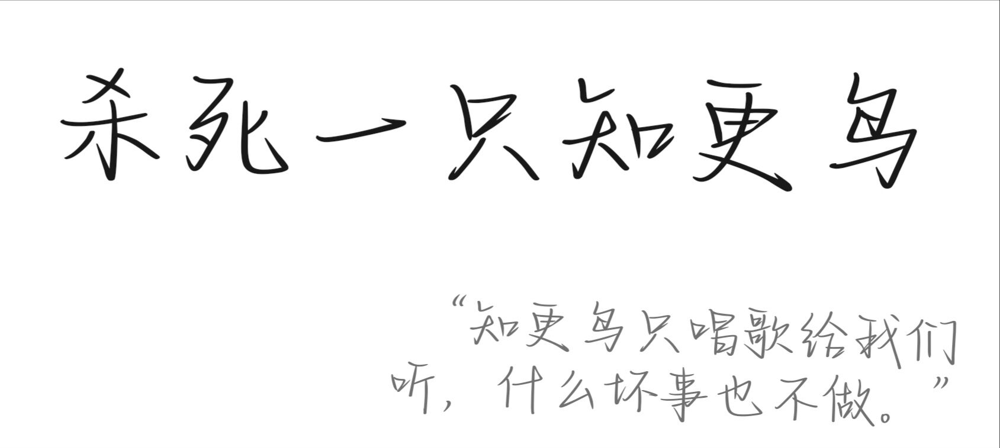

《杀死一只知更鸟》是美国女作家哈珀·李发表于1960年的长篇小说。
该小说讲述一个名叫汤姆·鲁滨逊的年轻人，被人诬告犯了强奸罪后，只是因为是一个黑人，辩护律师阿蒂克斯·芬奇尽管握有汤姆不是强奸犯的证据，都无法阻止陪审团给出汤姆有罪的结论。此一妄加之罪，导致汤姆死于乱枪之下。虽然故事题材涉及种族不平等与强暴等严肃议题，其文风仍温暖风趣。小说以第一人称著成，叙述者的父亲阿提克斯·芬奇在书中为道德端正的角色，亦是正直律师的典范。
1961年，该书获当年度普利策奖，被翻译成四十多种语言，在世界范围内售出超过三千万册，同年被改编成同名电影。